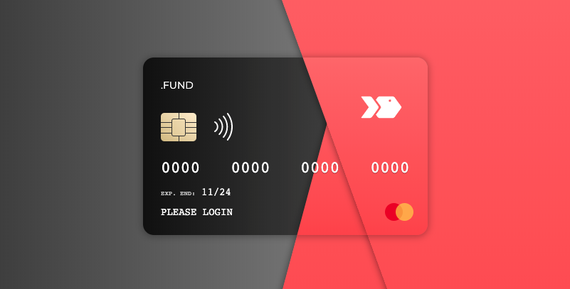

Salmon Fund 501(3)c | Non-Profit Organization will impact the way we donate in the future, and .Fund Tokens are poised to play a leading role in this new era of fundraising. SMN Tokens are the newest private circulating ERC20 securities that aim to become the preferred method to donate transparently through the Ethereum blockchain. Using distributed ledgers to track transactions, cryptocurrencies to transfer funds and smart contracts to ensure donations are spent correctly, we are determined to make the nonprofit sector more transparent.
Ethereum is an open source, public, blockchain-based, distributed computing platform and operating system featuring smart contract functionality.
Like Bitcoin, Ether is a digital bearer asset - similar to a security, like a bond or trust, issued in physical form. Just like cash, it does not require a third party to process or approve a transaction. Instead of operating as a digital currency or payment, Ether seeks to provide “fuel” for the decentralized applications on the network.
Our app is the SMN token which acts as a public database for all our monetary transactions. When we issue a SMN token, it represents 10 cents on the USD. With 10 million in private circulation, these tokens are managed in digital wallets and, once distributed, the owner has full control of token management. When tokens are in private circulation, they cannot be manipulated and only one entity can distribute them from the source. The Salmon.Fund holds the source wallet with all 10 million tokens and contractually distributes them which creates a system of trust.
The value of an SMN token will never change based on 1 token = 10 cents USD. Every transaction can be publicly traced via blockchain with the added bonus of attaching data similar to the memo line on a personal check.
When recording a transaction on the
blockchain, a small amount of money is used as a transaction fee. Ether refers to the
microtransaction as gas and it represents 1/10 of a cent per transaction depending on speed.
Gas is paid to crypto-miners for the cost of replicating ledgers as an incentive for their part in the
validation process.
The Salmon.Fund chose Ethereum because of its speed and the security of its smart
contracts. The security of blockchain technology is its cloud-based database of all transactions,
duplicated millions of times across thousands of computers by the crypto-miners providing a
verification system using sheer numbers. Token amounts can never be manipulated and the
network is unhackable to date. A digital wallet is the only required software needed to hold SMN
tokens; for usability and ease of entry, we direct our participants to Metamask.
All funds are distributed via Metamask in SMN tokens and withdrawals can be made after a request has been
submitted and mailed via check to the withdrawers registered address. These requests can be
in paper form or always accessible to the participant online at the Salmon.fund website.
Annually the Salmon.fund performance will be evaluated based on project completion, material
management, and participant withdrawal.
Excess funds exceeding 15% waste, will be redistributed to all wallet holders not exceeding 15% account interest.
